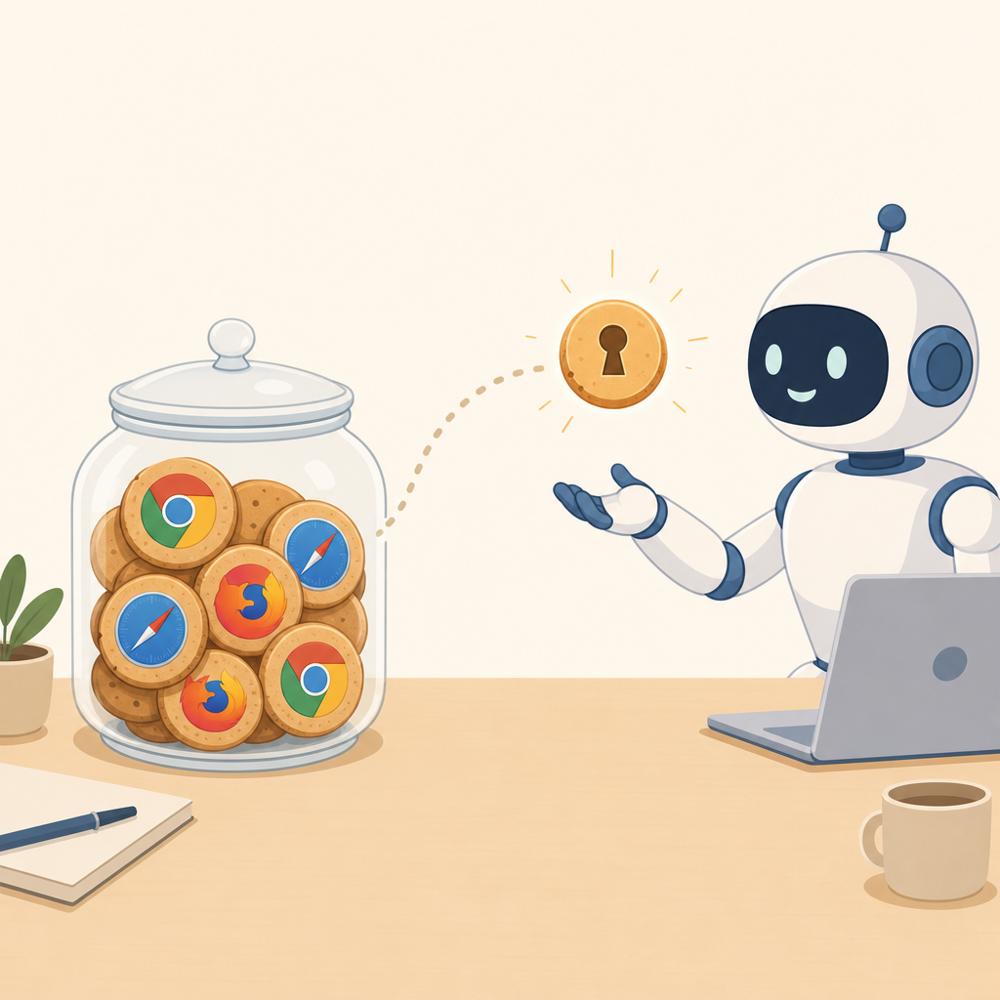

Stop copying cookies
out of your browser
Your coding agent can't log into Linear, GitHub, or your admin panel. cookiejar picks the exact cookies an agent needs, groups them into a password-protected bundle, and hands them a token — without copying your whole browser.
Free and open source. A CLI. Nothing else.

npm install -g @puffle/cookiejar
Needs Node 22+. Next: cookiejar setup creates the encrypted jar.
Why you'd want this
Cookies are already there
You logged in once in Chrome or Safari. cookiejar reads those sessions live and turns them into a token, so the agent doesn't need its own login.
Values never leave your machine
The encrypted vault stores only which cookies a bundle can use. Values are read fresh from the browser each time. Re-logging refreshes the agent automatically.
One switch to cut it off
Revoke a token, stop the daemon, lock the jar, or hit the auto-lock timer — every agent loses access immediately, even mid-session.
Cloud agents, no secrets
Tunnel the daemon and issue a proxy-only token. The agent can make authenticated requests but never sees the cookie itself.
How it works
-
1
Set up the jar.
cookiejar setupasks which browsers you use and creates an encrypted vault at~/.cookiejar. -
2
Pick cookies and make a bundle.
cookiejar cookies linear.appshows names and flags only. Pick the ones an agent needs, then create a bundle and issue a token. -
3
Hand the token to an agent. Start
cookiejar serveand give the agent the MCP config, a CLI command, or the HTTP endpoint. Locking the jar cuts them off instantly.
Try it in one command
Install, set up, and create your first bundle from the terminal:
- • Creates ~/.cookiejar, encrypted behind a master password
- • Lets you pick which browsers to read from
- • Then cookiejar sites, bundle new, token new
{
"mcpServers": {
"cookiejar": {
"command": "npx",
"args": ["-y", "@puffle/cookiejar", "mcp"],
"env": { "COOKIEJAR_TOKEN": "cjr_…" }
}
}
}
Set up @puffle/cookiejar from npm, use a fake profile so no real cookies are read, create a bundle for example.com, issue a token, start the daemon, and verify /agent/bundle returns 200. Then stop the daemon and report back.
From any language
cookiejar speaks plain HTTP when cookiejar serve is running. Pick a token up once and use a normal client.
From the terminal
Every operation is a command. No UI, no browser tab, no account to manage.
$ cookiejar sites linear.app 2 cookies chrome:Default notion.so 2 cookies chrome:Default github.com 3 cookies chrome:Default $ cookiejar bundle new "linear agent" created linear-agent-9f0b73 $ cookiejar token new linear-agent-9f0b73 --label devin --days 7 --proxy-only cjr_···························· 6ca24d828102 · devin · proxy only, values stay here $ cookiejar serve cookiejar is answering agent tokens at http://127.0.0.1:4088 auto-lock: 30 idle minutes · stop it to cut every agent off
FAQ
What actually is it?
Does it store my cookies on the internet?
Can a cloud agent use it?
POST /agent/fetch to make authenticated requests, but the cookie values stay on your machine.